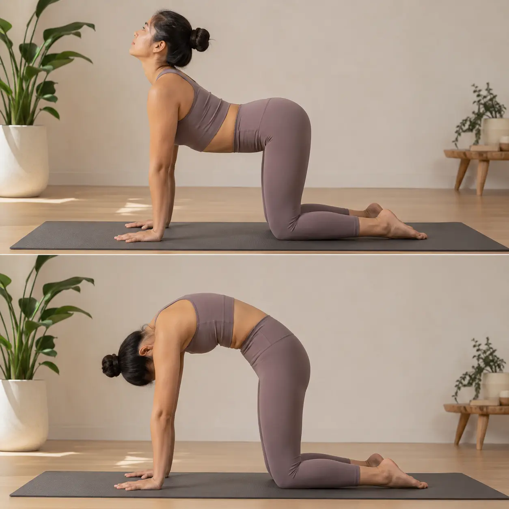

<script type="application/ld+json">
{
  "@context": "https://schema.org",
  "@graph": [
    {
      "@type": "Organization",
      "@id": "https://onlineyogaclass.in/#organization",
      "name": "Shringarika Mishra - Clinical Yoga",
      "url": "https://onlineyogaclass.in",
      "logo": "https://onlineyogaclass.in/images/logo.webp"
    },
    {
      "@type": "Person",
      "@id": "https://onlineyogaclass.in/#shringarika",
      "name": "Shringarika Mishra",
      "jobTitle": "Clinical Yoga Specialist & Research Scholar",
      "image": "https://onlineyogaclass.in/images/shringarika.webp",
      "sameAs": [
        "https://scholar.google.com/citations?user=FAp2CnkAAAAJ",
        "https://www.researchgate.net/profile/Shringarika-Mishra",
        "https://in.linkedin.com/in/shringarika-mishra-400607224"
      ]
    },
    {
      "@type": "BlogPosting",
      "@id": "https://onlineyogaclass.in/blogs/yoga-for-anxiety-research-based-breathing-techniques-for-neuro-stability.html#article",
      "isPartOf": {
        "@id": "https://onlineyogaclass.in/blogs/yoga-for-anxiety-research-based-breathing-techniques-for-neuro-stability.html"
      },
      "headline": "Yoga for Anxiety: 4 Simple Research-Backed Postures to Stop Panic Attacks and Restore Calm",
      "description": "Struggling with a racing mind, tight chest, or sudden panic attacks? Learn how chronic stress affects your nervous system and follow our easy, step-by-step clinical yoga guide to feel relaxed naturally.",
      "image": "/images/stress.webp",
      "author": {
        "@id": "https://onlineyogaclass.in/#shringarika"
      },
      "publisher": {
        "@id": "https://onlineyogaclass.in/#organization"
      },
      "mainEntityOfPage": "https://onlineyogaclass.in/blogs/yoga-for-anxiety-research-based-breathing-techniques-for-neuro-stability.html"
    },
    {
      "@type": "BreadcrumbList",
      "@id": "https://onlineyogaclass.in/blogs/yoga-for-anxiety-research-based-breathing-techniques-for-neuro-stability.html#breadcrumb",
      "itemListElement": [
        {
          "@type": "ListItem",
          "position": 1,
          "name": "Home",
          "item": "https://onlineyogaclass.in/"
        },
        {
          "@type": "ListItem",
          "position": 2,
          "name": "Clinical Blogs",
          "item": "https://onlineyogaclass.in/blogs.html"
        },
        {
          "@type": "ListItem",
          "position": 3,
          "name": "Yoga for Anxiety Management",
          "item": "https://onlineyogaclass.in/blogs/yoga-for-anxiety-research-based-breathing-techniques-for-neuro-stability.html"
        }
      ]
    }
  ]
}
</script>

<main class="relative z-10 max-w-5xl mx-auto px-4 sm:px-6 lg:px-8 pt-32 pb-24">
    <!-- Primary Banner Image with Layout Configurations to Prevent CLS -->
    <div class="mb-10 max-w-3xl mx-auto rounded-[2.5rem] overflow-hidden bg-slate-50 border border-pink-50 shadow-md">
        
    </div>

    <div class="article-card bg-white border border-gray-100 rounded-[2.5rem] p-8 md:p-12 shadow-sm transition">
        <script type="application/ld+json">
        {
          "@context": "https://schema.org",
          "@type": "BlogPosting",
          "headline": "Yoga for Anxiety: 4 Simple Research-Backed Postures to Stop Panic Attacks and Restore Calm",
          "description": "An easy-to-understand health evaluation exploring how chronic stress and nervous system overwhelm can be managed safely through somatic yoga practices and breathing protocols.",
          "keywords": "yoga for anxiety and panic attacks, lower high blood pressure naturally stress, clinical yoga Varanasi, Shringarika Mishra research, nervous system regulation, slow down racing thoughts",
          "author": {
            "@type": "Person",
            "name": "Shringarika Mishra"
          },
          "publisher": {
            "@type": "Organization",
            "name": "onlineyogaclass.in",
            "logo": {
              "@type": "ImageObject",
              "url": "https://onlineyogaclass.in/images/logo.webp"
            }
          }
        }
        </script>

        <span class="text-pink-600 font-bold text-xs uppercase tracking-widest block mb-3">Mental Health &amp; Nervous System Restoration</span>
        
        <h2 class="text-3xl md:text-4xl font-bold mb-6 text-transparent bg-clip-text bg-gradient-to-r from-pink-600 via-purple-600 to-pink-700">Yoga for Anxiety: 4 Simple Research-Backed Postures to Stop Panic Attacks and Restore Calm</h2>
        
        <!-- Hero Introduction Section with Side Image Layout -->
        <div class="flex flex-col md:flex-row gap-8 mb-8">
            <div class="md:w-1/3 flex-shrink-0">
                
            </div>
            <div class="md:w-2/3">
                <p class="text-gray-600 text-lg leading-relaxed">
                    Living with constant anxiety, dealing with a racing mind, or coping with a sudden, overwhelming panic attack can leave you feeling completely stuck and isolated within your own body. You might wake up with an uncomfortable tightness sitting right across your chest, go through your work tasks with an undercurrent of baseline worry, or experience sudden heart palpitations and shallow breathing that completely disrupt your day. It is incredibly exhausting to live in this state of continuous physical alert, constantly wondering why your mind and body refuse to relax.
                </p>
                <p class="text-gray-600 text-lg leading-relaxed mt-4">
                    In many modern setups, anxiety is treated as a simple psychological issue—a loop of overthinking that you should try to fix just by changing your thoughts or using heavy medications. While talking therapy provides excellent support, these approaches often leave out a major piece of the puzzle: how your physical posture, internal blood flow, and breathing patterns directly control your brain's stress center. During my clinical research work at Banaras Hindu University (BHU), studying how the body manages energy and stress has shown that anxiety is not just an emotional mood. It is a real physical state held in place by an overloaded nervous system and tight blood vessels. Your body is not broken; its natural defense system has simply become stuck on high alert.
                </p>
            </div>
        </div>
        
        <div class="full-content text-gray-700 space-y-8 leading-relaxed border-t border-gray-50 pt-8">
            
            <!-- Section 1: The Biology of Tension via Table -->
            <section>
                <h3 class="text-2xl font-bold text-gray-900 mb-3">Understanding the Terms: Hyper-Alert States vs. Biological Calm</h3>
                <p>
                    To help your nervous system heal safely, it helps to understand why your body reacts so strongly when you feel anxious. True peace and relaxation are not abstract concepts; they depend directly on the physical signals traveling between your brain and your internal organs every single second.
                </p>
                <div class="overflow-x-auto my-6">
                    <table class="w-full border-collapse text-sm text-left shadow-sm rounded-xl overflow-hidden border border-gray-100">
                        <thead>
                            <tr class="bg-pink-600 text-white font-bold">
                                <th class="p-4">Body Pathway</th>
                                <th class="p-4">What Happens Under Stress and Anxiety</th>
                                <th class="p-4">The Direct Impact on Your Daily Health</th>
                            </tr>
                        </thead>
                        <tbody class="divide-y divide-gray-100 bg-white">
                            <tr>
                                <td class="p-4 font-bold text-gray-900">The Stress Communication Axis</td>
                                <td class="p-4 text-gray-600">The master control loop that monitors your safety and tells your glands when to release stress chemicals.</td>
                                <td class="p-4 text-gray-600">Stays turned on because of modern work pressure, flooding your blood with adrenaline and cortisol.</td>
                            </tr>
                            <tr>
                                <td class="p-4 font-bold text-gray-900">Tight Internal Vessels</td>
                                <td class="p-4 text-gray-600">The automatic narrowing of main blood paths that feed your stomach, digestive tract, and pelvic area.</td>
                                <td class="p-4 text-gray-600">Forces blood out to your arms and legs for survival, causing bloating, poor digestion, and internal tension.</td>
                            </tr>
                            <tr class="bg-pink-50/50">
                                <td class="p-4 font-bold text-pink-700">The Vagal Brake Switch</td>
                                <td class="p-4 text-pink-900 font-medium">A major nerve line that works like a natural brake, telling your heart to slow down and dropping your blood pressure.</td>
                                <td class="p-4 text-pink-900">Can be turned on intentionally through gentle yoga and slow breathing to bring back automatic calm.</td>
                            </tr>
                        </tbody>
                    </table>
                </div>
                <p>
                    According to official health reports, long-term stress and anxiety are major factors behind the rise in digestive and circulatory difficulties worldwide. When your daily life keeps you under constant pressure, your brain instructs your body to prepare for an emergency. This defensive shift causes your muscles to tighten up and restricts normal blood flow to your inner stomach area, allowing physical tension and waste breakdown to pool within your deeper tissues. Our specialized yoga sequences are designed to reverse this pattern by teaching your body's main blood channels and nerve pathways to release their grip and open up naturally.
                </p>
            </section>

            <!-- Section 2: How Fast Thinking Locks Your Breathing -->
            <section>
                <h3 class="text-2xl font-bold text-gray-900 mb-3">The Body Connection: How Worry Chains Your Physical Breathing</h3>
                <p>
                    Let us explore the exact physical link that connects your breathing rate directly to your mental peace. Your nervous system cannot be forced into relaxation by pure willpower alone; it shifts only when it receives clear, comforting physical feedback from your muscles and lungs. Whenever your mind encounters a stressful situation, it reads the movement of your chest and diaphragm to decide whether it should continue firing off threat alerts.
                </p>
                <p>
                    When you fall into a habit of short, shallow chest breathing—which freezes your main breathing muscle and tightens your neck columns—you unintentionally tell your brain that you are in constant danger. This restricted motion desensitizes your internal pressure sensors, causing your emotional brain center to remain in a state of high alert. This constant tension robs your arterial walls of their natural elasticity, which elevates your blood pressure, halts healthy digestion, and locks your whole system into an exhausted, frozen state.
                </p>
                <!-- Image Asset 2: catcow.webp -->
                <div class="my-6 text-center">
                    
                </div>
                <p>
                    Our clinical yoga protocols break this distressing cycle by modifying the internal space and pressure inside your torso. By using gentle, comfortable floor positions that expand your chest and soften locked muscle layers, we change the real-time pressure gradients within your body. This adjustment functions like a direct calibration loop, releasing deep-seated tissue stagnation and allowing fresh, oxygen-rich blood to pool comfortably around your internal organs. These precise changes activate your primary vagal nerve lines, safely slowing down an accelerated heart rate and restoring an authentic, natural sense of mental stability.
                </p>
            </section>

            <!-- Section 3: Deep Biological Fact Box -->
            <section class="bg-pink-50 p-8 rounded-3xl border-l-8 border-pink-400">
                <h3 class="text-xl font-bold text-pink-800 mb-4">The Exhalation Safety Switch</h3>
                <p class="text-sm italic mb-4">
                    Did you know that simply changing how long you breathe out can interrupt a severe panic attack loop within minutes? In our clinical health evaluations, we observe that when an individual intentionally makes their exhalation twice as long as their inhalation, they instantly activate their body's relaxation system. This rhythmic shift applies a soft, physical stretch to the nerve fibers running through your throat and upper chest, sending an immediate signal to your brainstem that the crisis has passed. This simple technique lowers elevated heart rates, relaxes tight blood vessels, and helps your mind regain logical, calm control over distressing feelings.
                </p>
            </section>

            <!-- One Unified Analysis Block Placed Intact -->
            <div class="my-10 max-w-3xl mx-auto border border-green-600 rounded-[2.5rem] bg-white p-8 text-center relative overflow-hidden shadow-md">
                <div class="absolute top-0 right-0 bg-green-600 text-white text-[10px] font-black uppercase tracking-widest px-4 py-1.5 rounded-bl-xl shadow-sm">FREE SERVICE</div>
                <h3 class="text-2xl font-bold text-gray-900 mb-3">Get Your Free Medical Report Analysis</h3>
                <p class="mb-6 text-gray-600 text-base leading-relaxed max-w-2xl mx-auto">
                    Stop guessing your recovery path. Click the button below to text our team directly on WhatsApp. Attach your latest ultrasound or lab reports, and get a private, 15-minute clinical evaluation directly from BHU Research Scholar Shringarika Mishra.
                </p>
                <a href="https://wa.me/919559827280?text=Hello%20Team%2C%20I%20want%20to%20get%20a%20free%20consultation.%20I%20am%20attaching%20my%20medical%20reports%20here." 
                   target="_blank" 
                   rel="noopener noreferrer"
                   class="block text-center bg-green-600 hover:bg-green-700 text-white px-6 py-4 rounded-xl font-black text-lg tracking-wide uppercase shadow-md transition transform hover:-translate-y-0.5 active:translate-y-0 max-w-xl mx-auto">
                    UPLOAD YOUR MEDICAL REPORTS NOW
                </a>
            </div>

            <!-- Section 4: Deep Step-by-Step Asana Guides -->
            <section>
                <h3 class="text-2xl font-bold text-gray-900 mb-3">The Clinical Breathe Protocol: Your Daily Guide to Inner Quiet</h3>
                <p>To safely ease your heart's workload, reduce high adrenaline levels, and clear away chronic muscle tightness, practice this structured, easy routine every day:</p>
                
                <div class="space-y-6 mt-4">
                    <!-- Asana 1 -->
                    <div class="border border-pink-100 p-5 rounded-2xl bg-white shadow-sm">
                        <h4 class="font-bold text-gray-900 mb-2"><i class="fas fa-wind text-pink-400 mr-2"></i>1. Resonant Calming Breathing Loop</h4>
                        <p class="text-sm mb-2"><strong>Time to Practice:</strong> Spend 5 to 7 minutes on this breathwork every morning before breakfast.</p>
                        <p class="text-sm mb-2"><strong>Step-by-Step Instructions:</strong> Find a comfortable, quiet place to sit up straight with your legs crossed. If your lower back feels tired, place a thick pillow or cushion under your seat to keep your spine tall and relaxed. Let your shoulders drop down away from your ears, and rest your hands gently on your knees. Close your mouth softly. Take a slow, quiet breath in through your nose for a count of 4 seconds, letting your lower stomach expand outwards easily. Then, without holding your breath, release the air out through your nose for a slow, smooth count of 6 seconds. Keep this steady rhythm going, letting your attention rest entirely on the flow of air.</p>
                        <p class="text-sm"><strong>Why it helps your body:</strong> Breathing at this steady pace of 5 to 6 breaths per minute coordinates your heart rate with your lung movements. This natural balance quickly dials down the sympathetic over-activation that keeps you feeling anxious and nervous throughout the day.</p>
                    </div>
                    
                    <!-- Asana 2 -->
                    <div class="border border-pink-100 p-5 rounded-2xl bg-white shadow-sm">
                        <h4 class="font-bold text-gray-900 mb-2"><i class="fas fa-history text-pink-400 mr-2"></i>2. Soothing Throat Humming Vibration (Bhramari)</h4>
                        <p class="text-sm mb-2"><strong>Time to Practice:</strong> Practice 7 continuous breathing cycles every evening when your work hours end.</p>
                        <p class="text-sm mb-2"><strong>Step-by-Step Instructions:</strong> Sit comfortably with your back tall and straight and close your eyes. Raise your elbows to the sides of your room, and place your index fingers gently against the small cartilage flaps over your ear openings, pressing them shut to block out outside noises. Take a slow, deep breath in through your nose. As you breathe out smoothly, keep your lips completely closed and make a soft, low-pitched humming sound deep inside your throat. Let the physical vibration fill your head and jaw area.</p>
                        <p class="text-sm"><strong>Why it helps your body:</strong> The soft humming sound creates a physical vibration that directly stimulates the master vagus nerve pathways in your throat. This mechanical feedback releases tight vascular structures, drops elevated cortisol output, and invites an immediate feeling of internal security.</p>
                    </div>
                    
                    <!-- Asana 3 -->
                    <div class="border border-pink-100 p-5 rounded-2xl bg-white shadow-sm">
                        <h4 class="font-bold text-gray-900 mb-2"><i class="fas fa-expand-arrows-alt text-pink-400 mr-2"></i>3. Supported Legs-Up-The-Wall Posture (Viparita Karani)</h4>
                        <p class="text-sm mb-2"><strong>Time to Hold:</strong> Stay in this resting position for 10 minutes every night before sleep.</p>
                        <p class="text-sm mb-2"><strong>Step-by-Step Instructions:</strong> Spread your yoga mat or a soft, thick blanket right up against a clear wall. Sit sideways with one hip pressing directly against the base of the wall. In one smooth movement, lower your upper back flat down to the floor while swinging both legs straight up the wall. Slide a comfortable pillow or a folded towel directly underneath your lower hips and back to keep your pelvic area gently supported. Extend your arms out wide to your sides with your palms facing up toward your ceiling, and let your leg muscles go completely soft.</p>
                        <p class="text-sm"><strong>Why it helps your body:</strong> This gentle inversion changes how gravity acts on your blood flow. By letting pooled, tired blood drain effortlessly out of your legs back toward your heart, it takes the pressure off your circulatory system, slows your pulse, and commands your brain to enter a deep state of repair.</p>
                    </div>
                </div>
            </section>

            <!-- Section 5: Authority Validation with Rotated Image Layout -->
            <section>
                <h3 class="text-2xl font-bold text-gray-900 mb-3">Why Specialized Yoga Guidance Restores Long-Term Vitality</h3>
                <p>
                    Living with a constant weight of internal tension, facing regular sleep struggles, feeling bloated after simple meals, or dealing with a racing pulse are not personal flaws that you just have to accept. These symptoms are your body's clear, physical voice telling you that its internal regulation networks are carrying too much everyday strain.
                </p>
                <!-- Image Asset 3: childpose.webp -->
                <div class="my-6 text-center">
                    
                </div>
                <p>
                    Our professional stress management and nervous system balance programs at onlineyogaclass.in help you understand your body's true health signals and release internal blocks safely. By shifting completely away from intense, exhaustion-heavy exercise and focusing on soft, low-impact movements, you ensure you never push your nervous system into deeper overwhelm. This gentle approach keeps your internal pathways fully open, leaving you feeling light, peaceful, and re-anchored in your own natural strength.
                </p>
            </section>

            <!-- Institutional Bio Box with Specific Direct Program CTAs -->
            <div class="bg-gray-900 text-white p-8 rounded-[2.5rem] mt-12 shadow-2xl border-b-4 border-pink-500">
                <div class="flex flex-col md:flex-row items-center gap-8">
                    
                    <div>
                        <h4 class="text-2xl font-bold mb-2">About Shringarika Mishra</h4>
                        <p class="text-sm text-gray-300 leading-relaxed">
                            Gold Medalist (University of Patanjali) &amp; NET JRF (AIR 2). Research Scholar at Banaras Hindu University (BHU) specializing in Clinical Yoga and Neuro-Metabolic Integration. With over 11 years of experience and 16 published research papers, she provides evidence-based biological healing through onlineyogaclass.in.
                        </p>
                        <div class="flex gap-4 mt-6">
                            <a href="https://www.researchgate.net/profile/Shringarika-Mishra" target="_blank" rel="noopener noreferrer" class="flex items-center space-x-2 bg-white/10 px-4 py-2 rounded-lg hover:bg-white/20 transition">
                                <i class="fab fa-researchgate text-blue-400"></i>
                                <span class="text-xs font-bold">ResearchGate</span>
                            </a>
                            <a href="https://scholar.google.com/citations?user=FAp2CnkAAAAJ&amp;hl=en" target="_blank" rel="noopener noreferrer" class="flex items-center space-x-2 bg-white/10 px-4 py-2 rounded-lg hover:bg-white/20 transition">
                                <i class="fab fa-google text-red-400"></i>
                                <span class="text-xs font-bold">Google Scholar</span>
                            </a>
                        </div>
                    </div>
                </div>
                <!-- Connected Directly to the Stress Management Section Anchor inside programs/ -->
                <div class="mt-8 flex flex-col md:flex-row justify-center gap-4">
                    <a href="../../programs/#stress" class="bg-pink-600 text-white px-10 py-4 rounded-full font-bold hover:bg-pink-700 text-center transition shadow-lg text-sm">Join the Stress Management Batch</a>
                    <a href="https://wa.me/919559827280?text=Hello%20Team%2C%20I%20want%20to%20get%20a%20free%20consultation.%20I%20am%20attaching%20my%20medical%20reports%20here." target="_blank" rel="noopener noreferrer" class="border-2 border-green-500 text-green-500 px-10 py-4 rounded-full font-bold text-center hover:bg-green-500 hover:text-white transition text-sm">Free Clinical Consultation</a>
                </div>
            </div>

            <!-- Medical Disclaimer -->
            <p class="text-[10px] text-gray-400 mt-8 text-center leading-relaxed italic border-t border-gray-100 pt-6">
                <strong>Medical Disclaimer:</strong> The clinical insights and research-based observations shared in this article are intended entirely for general educational and health awareness purposes, drawing upon baseline neurobiological pathways evaluated during my clinical research work at BHU. This content can never replace professional medical diagnosis, laboratory profiling, or direct cardiology care. Always consult with your physician before beginning any new clinical yoga protocol.
            </p>
        </div>
            
        <!-- Read More Section -->
        <div class="mt-12 pt-8 border-t border-slate-100 text-left">
            <h4 class="text-xl font-black text-slate-900 tracking-tight mb-4 flex items-center gap-2">
                <span class="w-1 h-6 bg-pink-500 rounded-full"></span> Read More Clinical Insights
            </h4>
            <ul class="space-y-3 font-semibold text-pink-600 text-sm md:text-base">
                <li>
                    <a href="restoring-the-circadian-rhythm-the-clinical-link-between-yoga-and-sleep-quality.html" class="hover:text-pink-700 hover:underline transition flex items-center gap-2">
                        <i class="fas fa-book-open text-xs text-pink-400"></i> Restoring the Circadian Rhythm: The Clinical Link Between Yoga and Sleep Quality
                    </a>
                </li>
                <li>
                    <a href="mindfulness-based-stress-reduction-mbsr-a-clinical-toolkit-for-the-modern-professional.html" class="hover:text-pink-700 hover:underline transition flex items-center gap-2">
                        <i class="fas fa-book-open text-xs text-pink-400"></i> Mindfulness-Based Stress Reduction (MBSR): A Clinical Toolkit for the Modern Professional
                    </a>
                </li>
            </ul>
        </div>
    </div>
</main>